Q050902
ODMA
FAQtip
C/C++ Compiler Setup
Visual C++ Toolkit 1.01 Setup
0.30 2013-08-22 -12:47 -0700
|
|
Q050902
ODMA
FAQtip |
0.30 2013-08-22 -12:47 -0700 |
- Latest version: The latest version of this FAQtip is available on the Internet at
<http://ODMA.info/faq/2005/09/Q050902b.htm>.- This version: 0.30 <http://ODMA.info/faq/2005/09/Q050902c.htm>. Consult that page for the latest status and for the most-recent electronic copies of the material.
This page is intended for use by newcomers and beginners and to provide review for experienced software developers (amateur and professional). The intention is to have a stable, consistent C/C++ compiler installation that works for verification and community quality-assurance activities. It is also offered as a good practice for installation of the Microsoft Visual C++ Toolkit 2003 for self-study and for development of software on the Microsoft Windows platform.
This initial Outline/Sketch provides the intended direction. It may be incomplete. It also needs more confirmation in practice.
The basic elements are as follows:
1. Prerequisites
2. Installing the Toolkit
2.1 Elevating to an administrator account
2.2 Executing the setup program
2.3 Restoring limited-account operation
3. Confirming Installation
3.1 The Installed Command Prompt
3.2 Confirming the Compiler Version
3.3 Viewing the Installation Directory
4. Creating Your Development Directory
4.1 Directory for your C/C++ projects
4.2 Making personal command prompts
4.3 Verifying your command prompt
4.4 Copying shortcuts to your command prompts
5. Your "Hello World" Announcement
5.1 Make a "hello" project directory
5.2 Create the "hello.c" file in your project
5.3 Compiling "hello.exe"
5.4 Executing "hello.exe"
6. Review
6.1 What you've accomplished
6.2 Opportunities from here
7. Resources and References
1.1 You have successfully downloaded the setup file according to the procedure in Q050901c: Windows Visual C++ Toolkit 2003 1.01, or according to an equivalent procedure that you have selected.
1.2 You have reviewed the prerequisites for downloading and being prepared to install. The following procedure assumes that download and confirmation of the download has occurred as illustrated there.
Note. This procedure assumes that you are operating on a standalone computer or a simple workgroup network. If your accounts are managed by a domain controller, you will need the assistance of the system administrator to adjust privileges for your limited account. There are alternatives to this procedure. The approach offered here does not assume installation of any special software to simplify performing administrative functions under a limited account.
- 2.1.1 If you are able to disconnect from the Internet via software firewall, do so now.
- 2.1.2 Save any work and log out of your limited account.
- 2.1.3 Save all work and log out of all other accounts.
- 2.1.4 Physically disconnect from the Internet if the first step was not available to you.
- 2.1.5 Log in to an administrator account.
- 2.1.6 In that account use Start | Control Panel | User Accounts to change your limited account type to be an administrator account. (The limited account should be logged out when you do this, with the change taking effect on the next login of the limited account.)
- 2.1.7 Log out or switch out of the administrator account.
- 2.1.8 Log in to your usually-limited account. It now has administrative privileges and you are able to perform software installations. You should still be disconnected from the network.
- 2.2.1 The downloaded file has the date and time of the download, and the name it was downloaded as. The other description information that pops-up under the cursor should agree with that in the directory detail view, below.
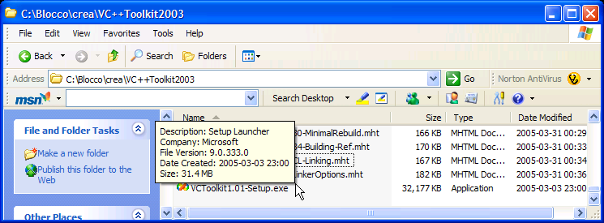
- 2.2.2 In the directory where you placed the setup program, double-click on the program.
- 2.2.3 If you receive a warning that this is a downloaded program, verify that this is Microsoft-published software and click "Run."
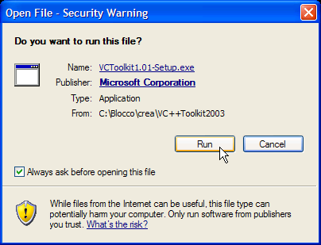
- 2.2.4 The installer will load and begin preparations ...
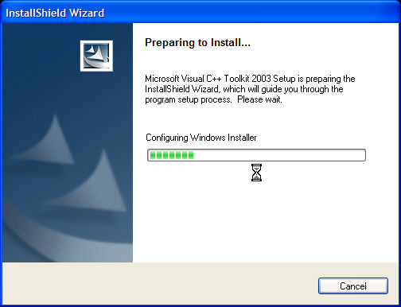
- 2.2.5 When the installer reports that it is ready to proceed. Click "Next."
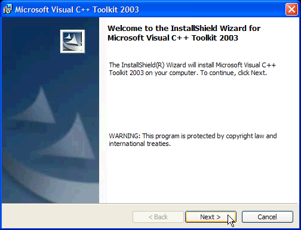
- 2.2.6 Review the End-User License Agreement (EULA)
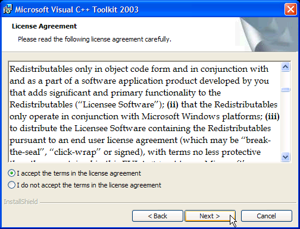
- 2.2.7 Lest there be any concern about the limitations on redistributables, there are no redistributables included in the Visual C++ Toolkit 2003 1.01. (See the redist.txt file in section 3.3.4.)
- 2.2.8 Accept the default destination folder (recommended). If you choose a different location for the software, you will need to make corresponding adjustments in the remainder of this procedure. Here we recommend that you use the default location as a way to preserve consistency with others and the customary practice for software on Microsoft Windows Win32 platforms.
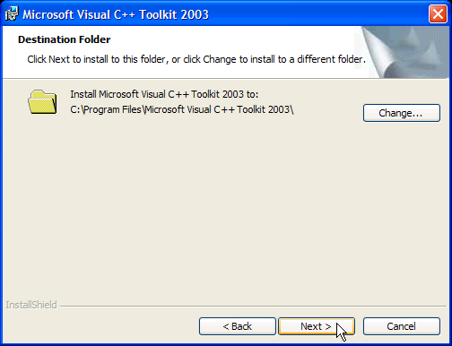
- 2.2.9 The installation should complete without difficulty.
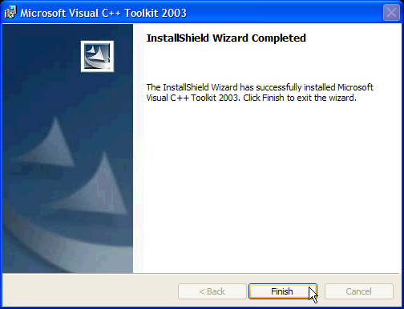
Note. This procedure also assumes that you are operating on a standalone computer or a simple workgroup network. If your accounts are managed by a domain controller, you will need the assistance of the system administrator to adjust privileges for your limited account.
- 2.3.1 You are still in your usually-limited account, but you have administrator privileges and can change you're account capabilities right here.
- 2.3.2 Using the Start | Control Panel | User Accounts window, change the account type of the temporarily-elevated limited account back to being a limited account.
- 2.3.3 Use Windows to restart your computer (remembering that there should only be this one account active at this point). This will ensure that the install is fully completed and that your limited account is no longer elevated to administrative.
- 2.3.4 You can reconnect the network now, if any cables were disconnected. Software disconnects using firewall software should be reset as part of restarting.
- 2.3.5 Log in to your limited account when the restart has completed.
All further operation is under the limited account where the Visual C++ Toolkit was installed.
- 3.1.1 The installation process added a folder and two links to Start | All Programs for you:
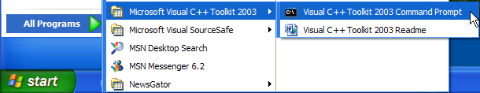
- 3.1.2 Click on the "Visual C++ Toolkit 2003 Command Prompt." You should be welcomed into a command-line console session:
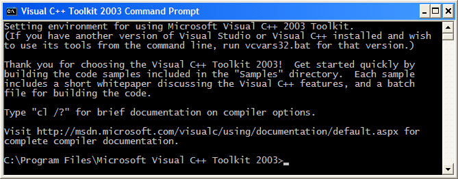
- 3.1.3 If your version takes the full screen of your computer and has no window bar at the top, click Alt+Space to switch to a context menu. On that menu, choose Properties and then change the Display Option from Full Screen to Window.
- 3.2.1 While in the initial command prompt (above), enter the command "cl" (letter c and letter l) followed by the Enter key:
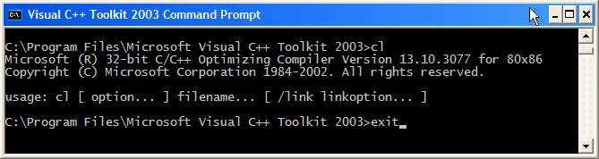
- 3.2.2 The compiler reports its version number. Your display should match this information.
- 3.2.3 Because no command-line parameters were specified with "cl," the compiler provides the two identification lines and a hint about the format of commands that can be used.
- 3.2.4 At the next command prompt (the ">" where the cursor is), enter the command "exit" followed by the Enter key. That will close the window, ending the console session.
- 3.3.1 Using Windows Explorer, navigate to the directory where the program is installed:
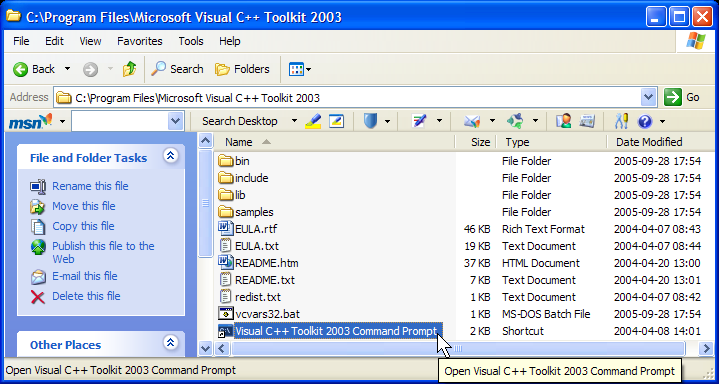
- 3.3.2 Notice the material that is available for you to consult. (To obtain this layout, click View | Details on the menu bar.)
- 3.3.3 There are two copies of the EULA and two versions of
README. You can read the ones that are most-conveniently viewed on your computer.
- 3.3.4 The file redist.txt identifies those components of the installed materials that are redistributable under the terms of the EULA. There are none. And to distribute the programs you write and their compiled versions, using the libraries provided with the toolkit, you won't be requiring any redistributables to accompany them. In Windows Notepad, set Format | Word Wrap to view the file's text:
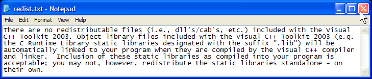
- 3.3.5 The two additional files of interest are the file
vcvars32.batand the Shortcut, "Visual C++ Toolkit 2003 Command Prompt." You will make personal versions of these files as part of setting up your own directory for development projects (section 4).
- 3.3.6 The remainder of the toolkit is in the folders bin, include, lib, and
samples. These can be explored later on, after you have set up your own projects. The individual samples are set up to be compiled. To avoid using the "C:\Program Files" folders as working directories, it is recommended that you copy the entire samples directory, or the individual samples subfolders to a personal folder of your own before working with them.
- 4.1.1 Using Windows Explorer, create a directory for your own C/C++ programming projects. It can be in your "My Documents" folder or it can be a new folder on your hard drive.
- 4.1.2 For simplicity, we will use "C:\MyPrograms" in our examples. This makes it easy to compare examples with those by Mike McGrath (2004).
- 4.1.3 We are going to make a simplified replacement for vcvars32.bat that works better for getting started. It also allows you to have programming projects wherever you want, in folders that are fully yours to use under the limited account.
- 4.1.4 The simplified replacement is stored in your project development directory.
- 4.1.5 Using Windows Notepad, create the following file and store it in your project directory (e.g., MyPrograms) as MyVC.bat.
- 4.1.6 The file should look essentially like that in the image below. Right-click on the image or this link: .txt copy to download a version that you can save with the name MyVC.bat. (If you view the .txt copy in your browser and save it from there, it may end up with HTML tags added to the file. Downloading instead of viewing will avoid this.)
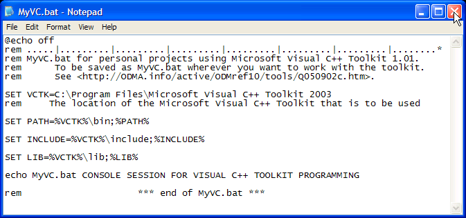
- 4.1.7 The "ruler" line in the first remark (rem command) is a reminder for keeping lines less than 80 columns. You should also turn off Format | Word Wrap in Notepad and choose a fixed-pitch font. This will help in the visual layout of your C/C++ programs and also make it easier to verify that text files are transcribed properly.
- 4.1.8 The "rem" lines are remarks, and they can be omitted without any impact on the behavior of the batch-file script.
- 4.1.9 The "@echo off" line at the top is a command that stops the echoing of the commands to the console window. The batch script runs silently (except for possible error messages) with the only output from the "echo" command near the end.
- 4.2.1 Using Windows Explorer, open the folder that you are using for your projects.
- 4.2.2 Right click on MyVC.bat and then click Create Shortcut on the context menu.
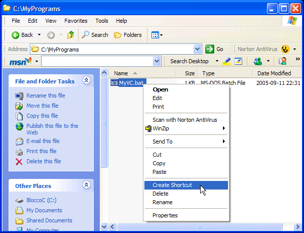
- 4.2.3 Right click on the Shortcut that is created and Click Rename.
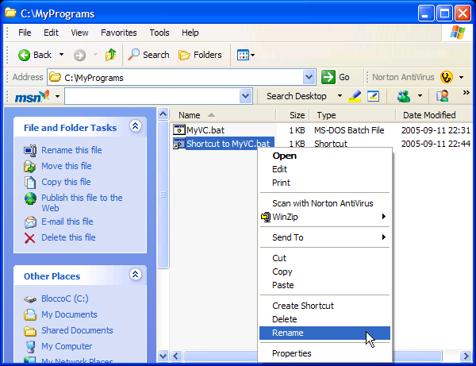
- 4.2.4 Rename the shortcut to something like "MyPrograms.bat." You can change the name later and you can give copies of it on your desktop and elsewhere different names. Just "MyPrograms" will work too, so long as you avoid putting it in places where other shortcuts by that name might arise, such as a shortcut to the
MyProgramsdirectory (something I'm stung by from time to time).
- 4.2.5 Right click on the shortcut and click on Properties. The initial properties will look like this:
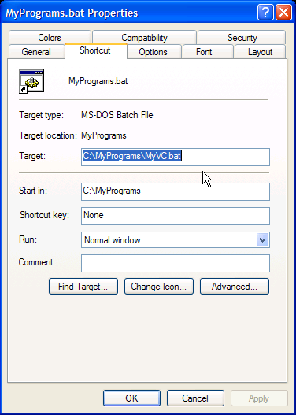
- 4.2.6 Change the Shortcut Properties so that the Target: entry reads "%comspec% /k MyVC.bat":
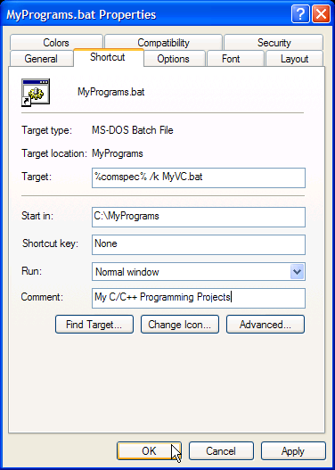
- 4.2.7 Supply a creative Comment entry also. Then click OK.
- 4.3.1 Double-click the shortcut in your projects folder. A console session should begin with the following initial line and command prompt:
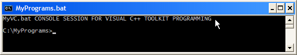
- 4.3.2 Enter the command "cl" and initiate the command by clicking the Enter key on your keyboard. If the PATH variable is set properly, you will have this response:
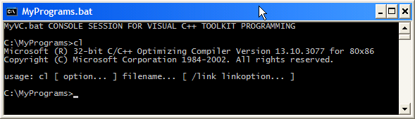
- 4.3.3 If you receive a different response, double-check the MyVC.bat file and the properties of the shortcut that you made from it.
- 4.3.4 With success to this point, double-check the other compiler parameters set up by MyVC.bat. Execute a "set INCLUDE" and then a "set LIB" command. You should have a result similar to this:
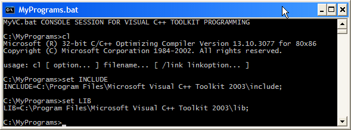
- 4.3.5 There may be additional material after the ";" of each displayed result. That doesn't matter for now.
- 4.3.6 End the console session with an "exit" command.
- 4.4.1 The shortcut that you created in your project directory can be copied to other places where it will be handy.
- 4.4.2 You can place a copy on your Windows Desktop.
- 4.4.3 Every time you double-click on one of the copied shortcuts, it will bring you into your project directory in a new console session. All parameters needed for using the toolkit will already be set.
- 4.4.4 You can also experiment with other properties of the shortcuts to set display font size, set the size of the window, and change the colors for text and the background.
- 4.4.5 You can also make copies of MyVC.bat in other directories and create new shortcuts for rapid entry into other projects and subprojects.
- 4.4.6 For now, we will use the one project directory.
- 5.1.1 Double-click on one of your MyPrograms.bat shortcuts.
- 5.1.2 In the new console session perform the indicated commands:
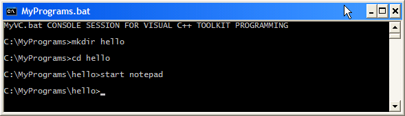
- 5.1.3 You have created a folder for your "hello" project with "mkdir hello" and then navigated (via "cd hello" command) into that folder to begin working there.
- 5.1.4 This was followed by command "start notepad" to initiate the Windows Notepad application. Notepad should open in a separate window.
- 5.2.1 Using Notepad, create a version of this famous first C Language application:
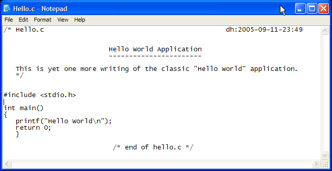
- 5.2.2 You can download a copy by right-clicking the image or this link to the .txt file. However you create it, remember to name it hello.c and save it in your hello folder, not somewhere else.
- 5.2.3 If you downloaded the file, you should open it in Notepad just to make sure you have what is expected. Try the command "start notepad hello.c" in the console session that you have going.
- 5.2.4 You can leave Notepad open in case there are changes to make. Remember to perform a File | Save of any changes so they will be written to the folder and the compiler will process the same version that is in Notepad.
- 5.3.1 After the program file has been saved from Notepad (or downloaded and reviewed), return to the console window and perform a "dir" command to demonstrate that the file is present and see what folders (directories) look like in console mode:
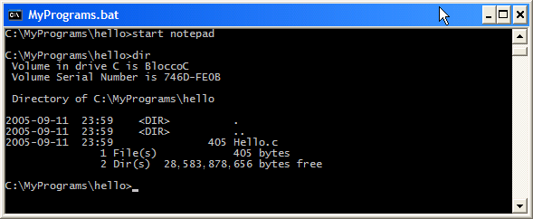
- 5.3.2 You can now compile the C program with one simple command, "cl hello.c":
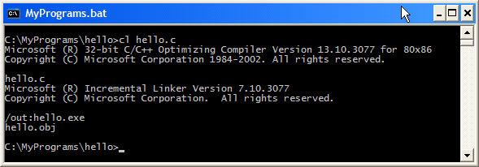
- 5.3.3 If you have different results, review the hello.c program for typographical errors or omissions.
- 5.3.4 Notice that, in contrast to examples you might see using Unix and GNU/Linux systems, the Visual C++ command-line compiler, cl, produces a complete program by default. The name of the program that is produced is derived from the name of the C Language program given on the command line.
- 5.3.5 Inspect the project directory with a "dir" command to see what's new:
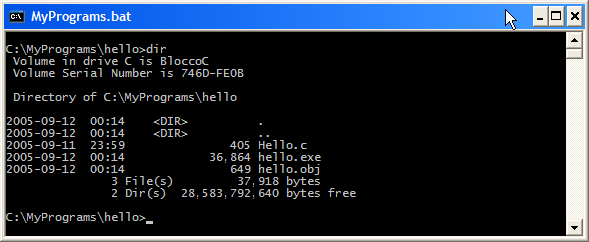
Execution of the program is simple:
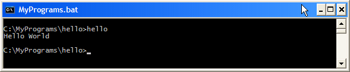
The goal for this procedure is demonstration, in small steps, that the Visual C++ Toolkit 2003 can be safely installed and set up ready for further exploratory usage. The procedure is intended to work for beginners even though not everything might be understood. For more-experienced computer users and developers, the procedure provides a short review for probable customization and shortcuts based on preferences from individual experience. The procedure is also a touchstone for experts recognizing how beginners on ActiveODMA project are advised to set up computers, compilers and tools for their self-study and possible participation.
6.1.1 We took an indirect route to the ultimate goal, your compiling of an initial C Language program that confirms installation and operation of the compiler. This route was designed to begin some practices that will serve you in operating safely and consistently in your software-development activities.
6.1.2 You've seen some basic manual steps of value in future work:
- operating as administrator only as long as needed to complete a software installation
- creating a batch file
- creating custom shortcuts for working in console-session (command-line) projects
- correctly entering and compiling a C Language program
- performing some basic console-session operations such as making a directory and navigating
6.1.3 You've seen a little of what command-line operation is like using Microsoft Windows console sessions. This has not been a systematic orientation, but you should have enjoyed some confidence in being able to follow predefined procedures involving console operations.
6.2.1 You now have some foundation practices for performing additional C/C++ projects.
6.2.2 You are also positioned to deepen your understanding of the rules and principles of command-line operation. You can learn more about the operations available to you in carrying out command-line sessions. You can also develop facility creating batch files and other scripts for simplifying repetitive activities in console sessions.
- see also:
- Q050903: C/C++ Programming Resources
- Eckel, Bruce (2004).
- Free Electronic Book Volume 1 & Volume 2, Thinking in C++ 2nd Edition by Bruce Eckel. Web page at <http://mindview.net/Books/TICPP/ThinkingInCPP2e.html> accessed on 2005-10-06.
I love the approach taken here, with books available for on-line reading, downloading (as Adobe PDF), and purchase. On this page the author describes the motivation and the value. There are other tips and leads to further material here. Newcomers might consider purchasing the hard copy of Volume 1 (second edition) with its bound-in CD-ROM with the Thinking in C CD-ROM designed for training and as preparation for moving on to C++ and for Java. Reviewers recommend that you have some programming experience and Volume 1 starts out assuming familiarity with C Language (and the McGrath books might get you started). You can also download the free edition and see how the material works for you. The author's comments about the CD-ROM on this web page are also instructive for setting your level of expectations and calibrating your experience and readiness for C++ --dh:2005-10-06
- McGrath, Mike (2004).
- C Programming in Easy Steps. Learn the ANSI C standard in full color. Computer Step, Southam, Warwickshire, UK. ISBN 1-84078-203-X pbk. Barnes & Noble edition for sale in the USA only, ISBN 0-7607-5504-3. Book description and source-code downloads available at <http://www.ineasysteps.com/books/?184078203x>.
- McGrath, Mike (2005).
- C++ Programming in Easy Steps. Conforms to ANSI & ISO Standards, in full color. Computer Step, Southam, Warwickshire, UK. ISBN 1-84078-295-1 pbk. Barnes & Noble edition for sale in the USA only, ISBN 0-7607-7138-3. Book description and source-code downloads available at <http://www.ineasysteps.com/books/?1840782951>.
The advantage of this version, focusing only on C++, in addition to the "in Easy Steps" format, is use of the MinGW build of the GNU C++ compiler with its closer match to the Microsoft Windows environment. If you use this compiler, I recommend that you employ batch files to set environment variables, including the Path variable, applying the technique of section 4 and employed throughout this site for C and C++ projects. And, if you want to grow into development of programs for the Windows graphical user-interface, I think the Microsoft Visual C++ Toolkit 2003 will provide an easier start. -- dh:2005-10-06

|
You are
navigating the ODMA Interoperability Exchange. |
created 2005-09-07-22:14 -0700 (pdt) by
orcmid |